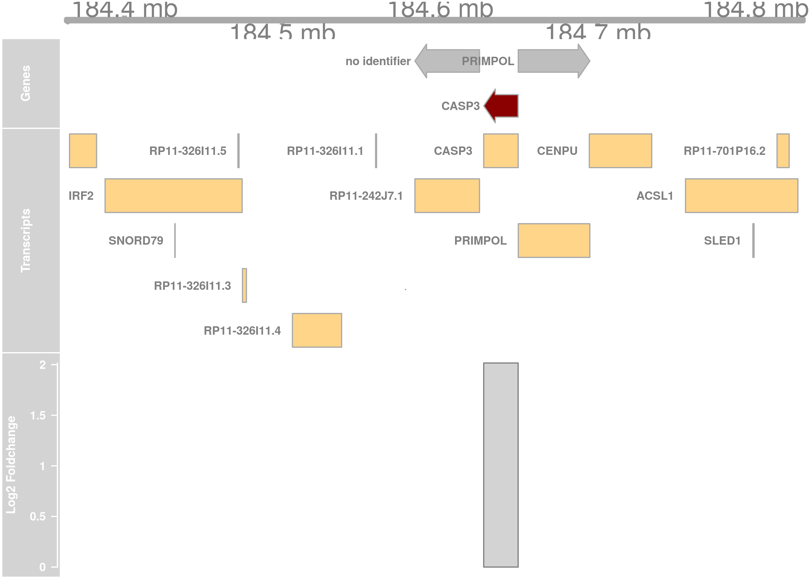
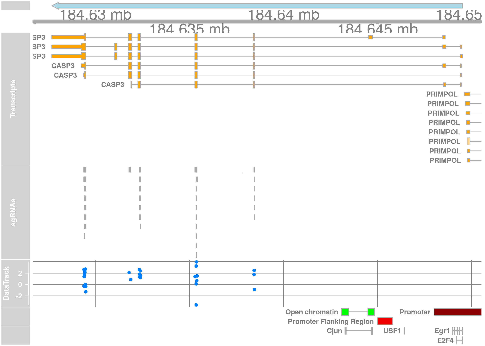
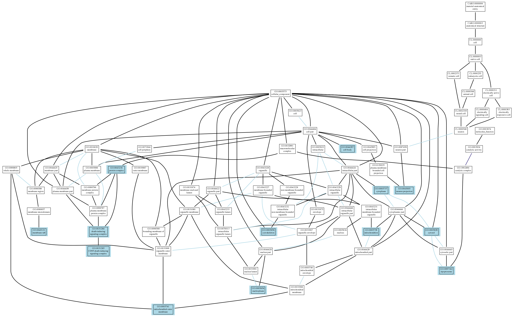
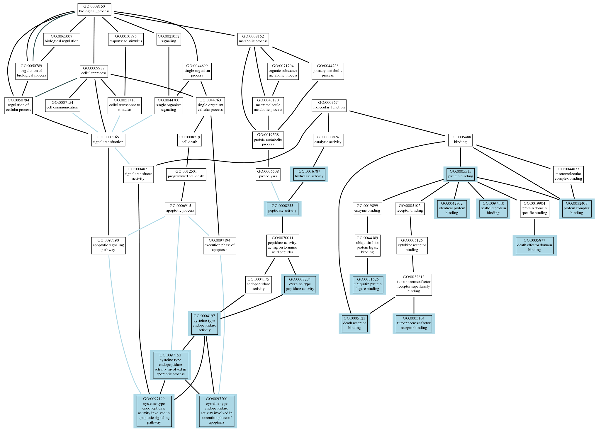

10.1 CASP3 (1)
10.1.1 General Gene Information
This paragraph provides general information about the gene of interest from Ensembl, EnrichR and KEGG.
10.1.1.1 Gene Information
| Gene Symbol | CASP3 |
| Ensembl Gene ID | ENSG00000164305 |
| Gene Description | caspase 3 [Source:HGNC Symbol;Acc:HGNC:1504] |
| Uniprot ID | P42574 |
| NCBI Gene ID | 836 |
10.1.1.2 Performance in Screen
| Log2 Foldchange | 2.01651 |
| Z-Ratio | 0.00031 |
| Wilcoxon p-value | 0.00031 |
| DESeq2 p-value | 0 |
| MAGeCK p-value | Enriched: 0.00099 Depleted: 0.00099 |
| sgRSEA p-value | Enriched: 0.012 Depleted: 1 |
| edgeR p-value | 0.04951 |
10.1.1.3 KEGG
Other Gene Names CASP3, CPP32, CPP32B, SCA-1
Associated Pathways
Platinum drug resistance
MAPK signaling pathway
p53 signaling pathway
Apoptosis
Apoptosis - multiple species
Natural killer cell mediated cytotoxicity
IL-17 signaling pathway
TNF signaling pathway
Serotonergic synapse
Non-alcoholic fatty liver disease (NAFLD)
AGE-RAGE signaling pathway in diabetic complications
Alzheimer's disease
Parkinson's disease
Amyotrophic lateral sclerosis (ALS)
Huntington's disease
Epithelial cell signaling in Helicobacter pylori infection
Pertussis
Legionellosis
Toxoplasmosis
Amoebiasis
Tuberculosis
Hepatitis B
Herpes simplex infection
Pathways in cancer
Viral carcinogenesis
Proteoglycans in cancer
MicroRNAs in cancer
Colorectal cancer
Viral myocarditis
Associated Diseases No data available
Motifs Pfam: Peptidase_C14
Presence in other Databases NCBI-ProteinID: NP_004337NCBI-GeneID: 836OMIM: 600636HGNC: 1504HPRD: 02799Ensembl: ENSG00000164305Vega: OTTHUMG00000133681Pharos: P42574(Tchem)UniProt: P42574
Associated Crystal Structures No data available
Amino Acid Sequence
MENTENSVDSKSIKNLEPKIIHGSESMDSGISLDNSYKMDYPEMGLCIIINNKNFHKSTGMTSRSGTDVDAANLRETFRNLKYEVRNKNDLTREEIVELMRDVSKEDHSKRSSFVCVLLSHGEEGIIFGTNGPVDLKKITNFFRGDRCRSLTGKPKLFIIQACRGTELDCGIETDSGVDDDMACHKIPVEADFLYAYSTAPGYYSWRNSKDGSWFIQSLCAMLKQYADKLEFMHILTRVNRKVATEFESFSFDATFHAKKQIPCIVSMLTKELYFYH
10.1.1.4 Further Information
The following genes bind to the promoter region of your gene: No data available
Your gene is a predicted target of the following miRNAs: No data available
Physical interaction with your gene has been reported for: No data available
10.1.2 Gene Model
This is a genomic view similar to a genome browser, which includes gene information. Transcripts and interesting genomic regions near the gene of interest are shown. It uses data from Ensembl.

10.1.3 sgRNA Model
This is a genomic view similar to a genome browser, which includes sgRNA information. The effects and locations of individual sgRNAs in the gene model are shown. It uses data from Ensembl.

10.1.4 Published Screens
GenomeCRISPR is a database curating high-throughput CRISPR/Cas screens. If the gene of interest was targeted, or one of the sgRNAs was used in a published screen before it will be shown here.
10.1.4.1 Reported Gene
The gene of interest has already been assayed in the following published CRISPR screens.
| Pubmed ID | Title | Abstract |
|---|---|---|
| 26472758 | Identification and characterization of essential genes in the human genome. | Large-scale genetic analysis of lethal phenotypes has elucidated the molecular underpinnings of many biological processes. Using the bacterial clustered regularly interspaced short palindromic repeats (CRISPR) system, we constructed a genome-wide single-guide RNA library to screen for genes required for proliferation and survival in a human cancer cell line. Our screen revealed the set of cell-essential genes, which was validated with an orthogonal gene-trap-based screen and comparison with yeast gene knockouts. This set is enriched for genes that encode components of fundamental pathways, are expressed at high levels, and contain few inactivating polymorphisms in the human population. We also uncovered a large group of uncharacterized genes involved in RNA processing, a number of whose products localize to the nucleolus. Last, screens in additional cell lines showed a high degree of overlap in gene essentiality but also revealed differences specific to each cell line and cancer type that reflect the developmental origin, oncogenic drivers, paralogous gene expression pattern, and chromosomal structure of each line. These results demonstrate the power of CRISPR-based screens and suggest a general strategy for identifying liabilities in cancer cells. |
| 26627737 | High-Resolution CRISPR Screens Reveal Fitness Genes and Genotype-Specific Cancer Liabilities. | The ability to perturb genes in human cells is crucial for elucidating gene function and holds great potential for finding therapeutic targets for diseases such as cancer. To extend the catalog of human core and context-dependent fitness genes, we have developed a high-complexity second-generation genome-scale CRISPR-Cas9 gRNA library and applied it to fitness screens in five human cell lines. Using an improved Bayesian analytical approach, we consistently discover 5-fold more fitness genes than were previously observed. We present a list of 1,580 human core fitness genes and describe their general properties. Moreover, we demonstrate that context-dependent fitness genes accurately recapitulate pathway-specific genetic vulnerabilities induced by known oncogenes and reveal cell-type-specific dependencies for specific receptor tyrosine kinases, even in oncogenic KRAS backgrounds. Thus, rigorous identification of human cell line fitness genes using a high-complexity CRISPR-Cas9 library affords a high-resolution view of the genetic vulnerabilities of a cell. |
| 24336569 | Genetic screens in human cells using the CRISPR-Cas9 system. | The bacterial clustered regularly interspaced short palindromic repeats (CRISPR)-Cas9 system for genome editing has greatly expanded the toolbox for mammalian genetics, enabling the rapid generation of isogenic cell lines and mice with modified alleles. Here, we describe a pooled, loss-of-function genetic screening approach suitable for both positive and negative selection that uses a genome-scale lentiviral single-guide RNA (sgRNA) library. sgRNA expression cassettes were stably integrated into the genome, which enabled a complex mutant pool to be tracked by massively parallel sequencing. We used a library containing 73,000 sgRNAs to generate knockout collections and performed screens in two human cell lines. A screen for resistance to the nucleotide analog 6-thioguanine identified all expected members of the DNA mismatch repair pathway, whereas another for the DNA topoisomerase II (TOP2A) poison etoposide identified TOP2A, as expected, and also cyclin-dependent kinase 6, CDK6. A negative selection screen for essential genes identified numerous gene sets corresponding to fundamental processes. Last, we show that sgRNA efficiency is associated with specific sequence motifs, enabling the prediction of more effective sgRNAs. Collectively, these results establish Cas9/sgRNA screens as a powerful tool for systematic genetic analysis in mammalian cells. |
| 24717434 | High-throughput screening of a CRISPR/Cas9 library for functional genomics in human cells. | Targeted genome editing technologies are powerful tools for studying biology and disease, and have a broad range of research applications. In contrast to the rapid development of toolkits to manipulate individual genes, large-scale screening methods based on the complete loss of gene expression are only now beginning to be developed. Here we report the development of a focused CRISPR/Cas-based (clustered regularly interspaced short palindromic repeats/CRISPR-associated) lentiviral library in human cells and a method of gene identification based on functional screening and high-throughput sequencing analysis. Using knockout library screens, we successfully identified the host genes essential for the intoxication of cells by anthrax and diphtheria toxins, which were confirmed by functional validation. The broad application of this powerful genetic screening strategy will not only facilitate the rapid identification of genes important for bacterial toxicity but will also enable the discovery of genes that participate in other biological processes. |
| 25494202 | Genome-scale transcriptional activation by an engineered CRISPR-Cas9 complex. | Systematic interrogation of gene function requires the ability to perturb gene expression in a robust and generalizable manner. Here we describe structure-guided engineering of a CRISPR-Cas9 complex to mediate efficient transcriptional activation at endogenous genomic loci. We used these engineered Cas9 activation complexes to investigate single-guide RNA (sgRNA) targeting rules for effective transcriptional activation, to demonstrate multiplexed activation of ten genes simultaneously, and to upregulate long intergenic non-coding RNA (lincRNA) transcripts. We also synthesized a library consisting of 70,290 guides targeting all human RefSeq coding isoforms to screen for genes that, upon activation, confer resistance to a BRAF inhibitor. The top hits included genes previously shown to be able to confer resistance, and novel candidates were validated using individual sgRNA and complementary DNA overexpression. A gene expression signature based on the top screening hits correlated with markers of BRAF inhibitor resistance in cell lines and patient-derived samples. These results collectively demonstrate the potential of Cas9-based activators as a powerful genetic perturbation technology. |
| 27013184 | CRISPR library designer (CLD): software for multispecies design of single guide RNA libraries. | Genetic screens using CRISPR/Cas9 are a powerful method for the functional analysis of genomes. |
| 27453484 | CRISPR/Cas9 Screens Reveal Requirements for Host Cell Sulfation and Fucosylation in Bacterial Type III Secretion System-Mediated Cytotoxicity. | Type III secretion systems (T3SSs) inject bacterial effector proteins into host cells and underlie the virulence of many gram-negative pathogens. Studies have illuminated bacterial factors required for T3SS |
| 24336571 | Genome-scale CRISPR-Cas9 knockout screening in human cells. | The simplicity of programming the CRISPR (clustered regularly interspaced short palindromic repeats)-associated nuclease Cas9 to modify specific genomic loci suggests a new way to interrogate gene function on a genome-wide scale. We show that lentiviral delivery of a genome-scale CRISPR-Cas9 knockout (GeCKO) library targeting 18,080 genes with 64,751 unique guide sequences enables both negative and positive selection screening in human cells. First, we used the GeCKO library to identify genes essential for cell viability in cancer and pluripotent stem cells. Next, in a melanoma model, we screened for genes whose loss is involved in resistance to vemurafenib, a therapeutic RAF inhibitor. Our highest-ranking candidates include previously validated genes NF1 and MED12, as well as novel hits NF2, CUL3, TADA2B, and TADA1. We observe a high level of consistency between independent guide RNAs targeting the same gene and a high rate of hit confirmation, demonstrating the promise of genome-scale screening with Cas9. |
| 27383988 | A CRISPR screen defines a signal peptide processing pathway required by flaviviruses. | Flaviviruses infect hundreds of millions of people annually, and no antiviral therapy is available. We performed a genome-wide CRISPR/Cas9-based screen to identify host genes that, when edited, resulted in reduced flavivirus infection. Here, we validated nine human genes required for flavivirus infectivity, and these were associated with endoplasmic reticulum functions including translocation, protein degradation, and N-linked glycosylation. In particular, a subset of endoplasmic reticulum-associated signal peptidase complex (SPCS) proteins was necessary for proper cleavage of the flavivirus structural proteins (prM and E) and secretion of viral particles. Loss of SPCS1 expression resulted in markedly reduced yield of all Flaviviridae family members tested (West Nile, Dengue, Zika, yellow fever, Japanese encephalitis, and hepatitis C viruses), but had little impact on alphavirus, bunyavirus, or rhabdovirus infection or the surface expression or secretion of diverse host proteins. We found that SPCS1 dependence could be bypassed by replacing the native prM protein leader sequences with a class I major histocompatibility complex (MHC) antigen leader sequence. Thus, SPCS1, either directly or indirectly via its interactions with unknown host proteins, preferentially promotes the processing of specific protein cargo, and Flaviviridae have a unique dependence on this signal peptide processing pathway. SPCS1 and other signal processing pathway members could represent pharmacological targets for inhibiting infection by the expanding number of flaviviruses of medical concern. |
| 26780180 | Optimized sgRNA design to maximize activity and minimize off-target effects of CRISPR-Cas9. | CRISPR-Cas9-based genetic screens are a powerful new tool in biology. By simply altering the sequence of the single-guide RNA (sgRNA), one can reprogram Cas9 to target different sites in the genome with relative ease, but the on-target activity and off-target effects of individual sgRNAs can vary widely. Here, we use recently devised sgRNA design rules to create human and mouse genome-wide libraries, perform positive and negative selection screens and observe that the use of these rules produced improved results. Additionally, we profile the off-target activity of thousands of sgRNAs and develop a metric to predict off-target sites. We incorporate these findings from large-scale, empirical data to improve our computational design rules and create optimized sgRNA libraries that maximize on-target activity and minimize off-target effects to enable more effective and efficient genetic screens and genome engineering. |
| 27760321 | A CRISPR Dropout Screen Identifies Genetic Vulnerabilities and Therapeutic Targets in Acute Myeloid Leukemia. | Acute myeloid leukemia (AML) is an aggressive cancer with a poor prognosis, for which mainstream treatments have not changed for decades. To identify additional therapeutic targets in AML, we optimize a genome-wide clustered regularly interspaced short palindromic repeats (CRISPR) screening platform and use it to identify genetic vulnerabilities in AML cells. We identify 492 AML-specific cell-essential genes, including several established therapeutic targets such as DOT1L, BCL2, and MEN1, and many other genes including clinically actionable candidates. We validate selected genes using genetic and pharmacological inhibition, and chose KAT2A as a candidate for downstream study. KAT2A inhibition demonstrated anti-AML activity by inducing myeloid differentiation and apoptosis, and suppressed the growth of primary human AMLs of diverse genotypes while sparing normal hemopoietic stem-progenitor cells. Our results propose that KAT2A inhibition should be investigated as a therapeutic strategy in AML and provide a large number of genetic vulnerabilities of this leukemia that can be pursued in downstream studies. |
| 27661255 | Compact and highly active next-generation libraries for CRISPR-mediated gene repression and activation. | We recently found that nucleosomes directly block access of CRISPR/Cas9 to DNA (Horlbeck et al., 2016). Here, we build on this observation with a comprehensive algorithm that incorporates chromatin, position, and sequence features to accurately predict highly effective single guide RNAs (sgRNAs) for targeting nuclease-dead Cas9-mediated transcriptional repression (CRISPRi) and activation (CRISPRa). We use this algorithm to design next-generation genome-scale CRISPRi and CRISPRa libraries targeting human and mouse genomes. A CRISPRi screen for essential genes in K562 cells demonstrates that the large majority of sgRNAs are highly active. We also find CRISPRi does not exhibit any detectable non-specific toxicity recently observed with CRISPR nuclease approaches. Precision-recall analysis shows that we detect over 90% of essential genes with minimal false positives using a compact 5 sgRNA/gene library. Our results establish CRISPRi and CRISPRa as premier tools for loss- or gain-of-function studies and provide a general strategy for identifying Cas9 target sites. |
| 27260156 | Genomic Copy Number Dictates a Gene-Independent Cell Response to CRISPR/Cas9 Targeting. | The CRISPR/Cas9 system enables genome editing and somatic cell genetic screens in mammalian cells. We performed genome-scale loss-of-function screens in 33 cancer cell lines to identify genes essential for proliferation/survival and found a strong correlation between increased gene copy number and decreased cell viability after genome editing. Within regions of copy-number gain, CRISPR/Cas9 targeting of both expressed and unexpressed genes, as well as intergenic loci, led to significantly decreased cell proliferation through induction of a G2 cell-cycle arrest. By examining single-guide RNAs that map to multiple genomic sites, we found that this cell response to CRISPR/Cas9 editing correlated strongly with the number of target loci. These observations indicate that genome targeting by CRISPR/Cas9 elicits a gene-independent antiproliferative cell response. This effect has important practical implications for the interpretation of CRISPR/Cas9 screening data and confounds the use of this technology for the identification of essential genes in amplified regions. |
| 27869803 | Genome-wide CRISPR screens reveal a Wnt-FZD5 signaling circuit as a druggable vulnerability of RNF43-mutant pancreatic tumors. | Forward genetic screens with CRISPR-Cas9 genome editing enable high-resolution detection of genetic vulnerabilities in cancer cells. We conducted genome-wide CRISPR-Cas9 screens in RNF43-mutant pancreatic ductal adenocarcinoma (PDAC) cells, which rely on Wnt signaling for proliferation. Through these screens, we discovered a unique requirement for a Wnt signaling circuit: engaging FZD5, one of the ten Frizzled receptors encoded in the human genome. Our results uncover an underappreciated level of context-dependent specificity at the Wnt receptor level. We further derived a panel of recombinant antibodies that reports the expression of nine FZD proteins and confirms that FZD5 functional specificity cannot be explained by protein expression patterns. Additionally, antibodies that specifically bind FZD5 and FZD8 robustly inhibited the growth of RNF43-mutant PDAC cells grown in vitro and as xenografts in vivo, providing orthogonal support for the functional specificity observed genetically. Proliferation of a patient-derived PDAC cell line harboring an RNF43 variant was also selectively inhibited by the FZD5 antibodies, further demonstrating their use as a potential targeted therapy. Tumor organoid cultures from colorectal carcinoma patients that carried RNF43 mutations were also sensitive to the FZD5 antibodies, highlighting the potential generalizability of these findings beyond PDAC. Our results show that CRIPSR-based genetic screens can be leveraged to identify and validate cell surface targets for antibody development and therapy. |
| 28162770 | Gene Essentiality Profiling Reveals Gene Networks and Synthetic Lethal Interactions with Oncogenic Ras. | The genetic dependencies of human cancers widely vary. Here, we catalog this heterogeneity and use it to identify functional gene interactions and genotype-dependent liabilities in cancer. By using genome-wide CRISPR-based screens, we generate a gene essentiality dataset across 14 human acute myeloid leukemia (AML) cell lines. Sets of genes with correlated patterns of essentiality across the lines reveal new gene relationships, the essential substrates of |
10.1.4.2 Reported Phenotype
In previous screens, authors reported the following phenotypes for the gene of interest.
10.1.4.3 Reported sgRNA
The same sgRNAs have been used in the following previously published screens.
No Data available10.1.5 Gene Performance
This is a brief overview of how the gene of interest performed compared to all other genes.
10.1.5.1 Log2-Fold-Change
10.1.5.2 Z-Ratio
10.1.5.3 Individual sgRNAs
10.1.6 COSMIC Mutation Database
Additional information about cancer related mutations is retrieved from the COSMIC database. For each gene of interest, all detected mutations of various cancer samples present in the COSMIC database are visualized.
10.1.6.1 All Data
10.1.6.2 Mutation Types
10.1.6.3 Tumor Types
10.1.6.4 Tumor Sites
10.1.6.5 Samples
10.1.7 Gene Ontology
Information from the Gene Ontology Consortium was retrieved. The gene of interest is annotated with the following Gene Ontology terms.
10.1.7.1 Cellular Component

10.1.7.2 Biological Process

10.1.7.3 Molecular Function
